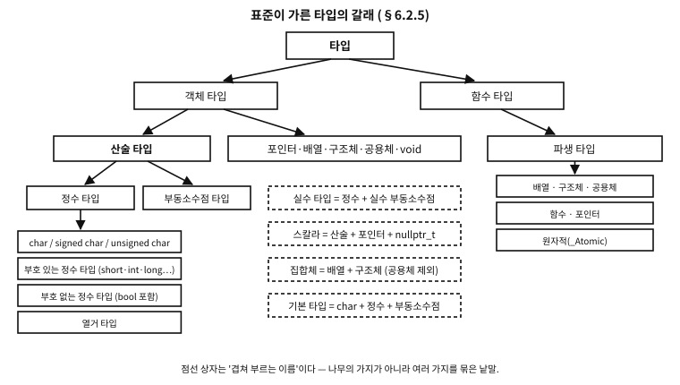

26 타입의 지도 — 표준이 가른 것들
먼저 알아야 할 것
돌아보기
23장에서 int x = 0;을 쓰면서 「타입」이라는 낱말을 계속 썼다. 그러면 타입은 정확히 무엇을 정하는 것인가? 셋만 꼽아 보라.
답. 넷을 꼽을 수 있다.
- 크기 — 이 값이 몇 바이트를 차지하는가(6장).
- 표현 — 그 바이트를 어떤 눈으로 읽는가(7~8장의 2의 보수, IEEE 754).
- 허용되는 연산 — 무엇을 할 수 있는가(
%는 정수만,++는 실수 타입과 포인터만). - 계약 — 컴파일러가 무엇을 검사하고 무엇을 보장하는가.
이 장은 그 「타입」이라는 낱말 아래에 어떤 갈래가 있는지를 표준의 분류 그대로 세운다.
이 장이 끝나면
<stdint.h> 의 폭을 이름에 적는 타입들을 얹는다. 다음 장의 정수, 그다음 장의 승격이 전부 이 어휘 위에 선다.이 장에서 답할 질문
void는 「아무것도 없음」인데 왜 타입인가?- 「선택 사항」이라니 —
uint32_t가 없는 기계가 정말 있는가?
26.1 타입이 정하는 네 가지
같은 여덟 바이트를 놓고도 double로 읽으면 3.14, long으로 읽으면 4614253070214989087이다(8장에서 본 그대로다). 바이트는 자기가 무엇인지 모르고, 아는 것은 타입뿐이다.
| 타입이 정하는 것 | 예 | 자세히 |
|---|---|---|
| 크기 | sizeof(int) = 4 | 6장 |
| 표현 | -1 은 int 로 FF FF FF FF | 7·8장 |
| 허용되는 연산 | % 는 정수만, / 는 산술 타입만 | 28·47장 |
| 계약 | const 는 「바꾸지 않는다」 | 23·49장 |
표 26.1
그래서 「타입을 안다」는 것은 문법을 아는 것이 아니라 이 네 가지를 아는 것이다. 그리고 표준은 그 네 가지를 갈래별로 정해 두었다.
26.2 첫 갈래 — 객체 타입과 함수 타입
가장 위의 가름은 둘이다.
| 갈래 | 무엇인가 | 예 |
|---|---|---|
| 객체 타입 | 값을 담는 자리를 서술한다 | int, double, struct point, int[10], char * |
| 함수 타입 | 일하는 것을 서술한다 — 반환 타입과 매개변수로 | int(void), void(int, char *) |
표 26.2
이 가름이 실무에서 드러나는 자리가 있다. 함수 타입에는 sizeof를 쓸 수 없고, 객체가 아니므로 크기도 정렬도 없다. 함수를 값처럼 다루려면 함수를 가리키는 포인터로 바꿔야 하는 이유가 이것이다(57장).
26.2.1 완전 타입과 불완전 타입
객체 타입은 다시 갈린다 — 크기를 아는가.
| 상태 | 무엇을 못 하는가 | 예 |
|---|---|---|
| 완전 타입 | (제약 없음) | int, struct point(정의를 본 뒤) |
| 불완전 타입 | sizeof 를 못 쓰고, 그 타입의 객체를 만들 수 없다 | 크기를 안 적은 배열 int a[], 태그만 선언한 struct node |
void | 완성될 수 없는 불완전 객체 타입 | 값의 집합이 비어 있다 |
표 26.3
불완전 타입은 결함이 아니라 도구다. 「이런 타입이 있다는 것만 알고 속은 모른다」를 표현할 수 있어서, 헤더에 속을 감춘 채 포인터만 주고받는 불투명 타입(FILE *가 그 원형이다)이 성립한다. 속을 감추면 쓰는 쪽이 그 속에 의존할 수 없다는 것이 설계의 이득이다(45장).
문. void는 「아무것도 없음」인데 왜 타입인가?
답. 세 자리에서 서로 다른 일을 하기 때문이다.
void f(void)— 「반환할 값이 없다」와 「매개변수가 없다」.(void)printf(…)— 「이 값을 버리겠다」를 명시적으로 적는 캐스트.void *— 「어떤 객체를 가리키는지는 아직 정하지 않았다」. 이것만은 완전한 객체 타입이다(포인터니까 크기가 있다).
표준의 정의는 「값의 집합이 비어 있고, 완성될 수 없는 불완전 객체 타입」이다. 그래서 void 변수는 만들 수 없고 sizeof(void)도 표준에서는 쓸 수 없다 — GCC 는 확장으로 1을 준다(12장의 회색지대).
26.3 기본 타입
표준이 「기본 타입」(basic types)이라 부르는 것은 정확히 이 셋을 합친 것이다.
| 무엇이 기본 타입인가 (§6.2.5p18) | 비고 |
|---|---|
char | 단 하나. 아래의 문자 타입 셋 중 하나 |
| 부호 있는 정수 타입과 부호 없는 정수 타입 | short·int·long·long long과 그 unsigned 짝 |
| 부동소수점 타입 | float·double·long double과 복소수 |
표 26.4
열거 타입은 기본 타입이 아니다. 정수 타입이기는 하지만 기본 타입 목록에는 들어가지 않는다 — 흔히 헷갈리는 자리다.
기본 타입에 대해 표준이 못박는 문장이 하나 더 있다. 「구현이 두 기본 타입에 같은 표현을 주더라도, 그것들은 여전히 별개의 타입이다.」 다음 절의 문자 타입이 그 문장의 대표 사례다.
26.3.1 문자 타입은 셋이다
| 타입 | 부호 | 쓰는 자리 |
|---|---|---|
char | 구현이 정한다 — signed char 또는 unsigned char 와 같은 범위·표현·동작 | 문자를 담을 때 |
signed char | 부호 있음 | 작은 부호 있는 정수 |
unsigned char | 부호 없음 | 바이트를 들여다볼 때(46장) |
표 26.5
핵심은 각주가 못박는 이 문장이다 — char 는 어느 선택을 했든 다른 둘과 별개의 타입이고, 둘 중 어느 것과도 호환되지 않는다. 즉 셋이지 둘이 아니다.
흔한 오해. “char 는 그냥 signed char 다”
플랫폼에 달렸다. x86 리눅스에서는 부호 있고, ARM 리눅스와 여러 임베디드 툴체인에서는 부호가 없다. <limits.h> 의 CHAR_MIN 이 0인지 SCHAR_MIN 인지로 구별할 수 있다.
이 차이가 조용히 무는 자리가 있다. 128 이상의 바이트를 char 에 담아 비교하면 부호 있는 쪽에서는 음수가 된다.
char c = 0xFF;
if (c == 0xFF) { … } /* 부호 있는 char 에서는 성립하지 않는다 */그래서 규율은 단순하다 — 글자는 char, 바이트는 unsigned char, 작은 수는 int8_t. 세 용도를 이름으로 갈라 두면 이 함정을 만나지 않는다.
플랫폼 노트. C23: bool 은 부호 없는 정수 타입이다
C23 의 §6.2.5p8 은 「bool 과 표준 부호 있는 정수 타입에 대응하는 부호 없는 타입들을 합쳐 표준 부호 없는 정수 타입이라 부른다」고 적는다. 즉 bool 은 정수 타입이고, 산술 타입이며, 스칼라다.
실측이 그것을 확인한다 — bool + 0 의 타입은 int 다(승격되었다는 뜻이다). 값은 언제나 0 아니면 1 이라는 점만 특별하다: 어떤 스칼라를 bool 에 넣어도 0이면 0, 아니면 1이 된다. C99 의 _Bool 이 C23 에서 bool 이라는 예약어를 얻은 것이고, <stdbool.h> 는 이제 있어도 그만인 헤더가 되었다(79장).
26.4 정수·실수·산술 — 겹쳐 부르는 이름들
여기부터가 이 책이 계속 써 온 어휘의 출처다. 이 이름들은 나무의 가지가 아니라 여러 가지를 묶어 부르는 낱말이다.
| 이름 | 무엇을 묶은 것인가 (§6.2.5) | 이 이름을 쓰는 자리 |
|---|---|---|
| 정수 타입 | char + 부호 있는 정수 + 부호 없는 정수 + 열거 타입 | %·<< 의 피연산자 |
| 실수 타입 | 정수 타입 + 실수 부동소수점 타입 (복소수 제외) | ++·-- 의 피연산자(47장) |
| 산술 타입 | 정수 타입 + 부동소수점 타입 (복소수 포함) | +·-·*·/ 의 피연산자, 승격의 대상 |
| 스칼라 타입 | 산술 타입 + 포인터 + nullptr_t(C23) | if·while 의 조건, ! 의 피연산자 |
| 집합체 타입 | 배열 + 구조체 — ★공용체는 아니다 | 초기화자 목록의 규칙 |
표 26.6
47장의 연산자 계약 표에서 「피연산자: 실수 타입 또는 포인터」 같은 칸을 보게 되는데, 이제 그 칸을 정확히 읽을 수 있다.
흔한 오해. “공용체도 집합체다”
C 에서는 아니다. §6.2.5p26 은 「배열과 구조체 타입을 합쳐 집합체 타입이라 한다」고만 적는다. 공용체는 빠져 있다.
이유는 「집합체」라는 낱말이 동시에 여럿을 담는 것을 뜻하기 때문이다. 공용체는 한 번에 하나만 살아 있으므로(46장의 활성 멤버) 그 정의에 맞지 않는다.
C++ 는 다르다 — 거기서는 공용체도 조건을 갖추면 집합체(aggregate)다. 두 언어의 초기화 규칙을 비교할 때 이 차이가 드러난다.

그림 26.1 — 표준이 가른 타입의 갈래. 점선 상자는 여러 가지를 묶어 부르는 이름이다.
26.5 파생 타입 — 있는 것에서 만들어 내는 것
객체 타입과 함수 타입에서 새 타입을 지어낼 수 있고, 그렇게 지은 것을 파생 타입이라 한다.
| 파생 | 무엇에서 무엇을 | 자세히 |
|---|---|---|
| 배열 | 원소 타입 T 에서 「T 의 배열」로 | 38장 |
| 구조체 | 여러 타입을 차례로 담아 | 44장 |
| 공용체 | 여러 타입을 겹쳐 담아 | 46장 |
| 함수 | 반환 타입 T 에서 「T 를 돌려주는 함수」로 | 24장 |
| 포인터 | 참조 타입 T 에서 「T 를 가리키는 포인터」로 | 35장 |
| 원자적 | _Atomic(T) — 조건부 기능 | 77장 |
표 26.7
이 만들기는 재귀적으로 적용된다. 「int 를 가리키는 포인터의 배열 10개」도, 「int 를 돌려주는 함수를 가리키는 포인터」도 그렇게 지어진다. 58장 「선언을 읽는 법」이 어려운 이유가 바로 이 재귀에 있고, 표준은 그중 셋 — 배열·함수·포인터 — 을 따로 묶어 파생 선언자 타입이라 부른다. 선언을 읽을 때 안쪽에서 바깥으로 풀어야 하는 것이 정확히 이 셋이다.
26.6 한정자 — 같은 타입의 한정판
const·volatile·restrict 는 새 타입을 만드는 것이 아니라 한정된 판을 만든다.
| 한정자 | 무엇을 약속하는가 | 자세히 |
|---|---|---|
const | 이 이름으로는 바꾸지 않는다 | 23장 |
volatile | 내가 모르는 사이에 바뀔 수 있으니 최적화하지 말라 | 13·75·77장 |
restrict | 이 포인터로만 이 객체에 접근한다 | 38장 |
표 26.8
한정된 타입과 한정되지 않은 타입은 같은 크기·표현·정렬을 갖는다 — 달라지는 것은 무엇을 할 수 있는가뿐이다. 그래서 const int 는 int 와 같은 4바이트이고, volatile 을 붙였다고 값이 커지지 않는다.
examples/ch26/type_map.c
/* 표준의 타입 분류를 컴파일러에게 직접 물어본다.
_Generic 은 '이 수식의 타입이 무엇이냐'를 컴파일 시간에 고르는 장치다. */
#include <stdbool.h>
#include <stddef.h>
#include <stdint.h>
#include <stdio.h>
/* 어떤 타입인지 이름을 돌려준다 — 목록에 없으면 "그 밖" */
#define TYPE_NAME(x) _Generic((x), \
_Bool: "bool", \
char: "char", \
signed char: "signed char", \
unsigned char: "unsigned char", \
short: "short", \
unsigned short: "unsigned short", \
int: "int", \
unsigned int: "unsigned int", \
long: "long", \
unsigned long: "unsigned long", \
long long: "long long", \
unsigned long long: "unsigned long long", \
float: "float", \
double: "double", \
long double: "long double", \
void *: "void *", \
default: "그 밖")
enum color { RED, GREEN, BLUE };
struct point { int x, y; };
union bits { int i; float f; };
int main(void)
{
puts("[같은 철자라도 컴파일러가 보는 타입은 이것이다]");
bool b = true;
char c = 'a';
signed char sc = 1;
unsigned char uc = 1;
uint8_t u8 = 1;
enum color e = RED;
printf(" bool → %s\n", TYPE_NAME(b));
printf(" char → %s\n", TYPE_NAME(c));
printf(" signed char → %s ← char 와 다른 타입이다\n", TYPE_NAME(sc));
printf(" unsigned char → %s\n", TYPE_NAME(uc));
printf(" uint8_t → %s ← 새 타입이 아니라 별명이다\n", TYPE_NAME(u8));
printf(" size_t → %s\n", TYPE_NAME((size_t)1));
printf(" 열거 변수 → %s\n", TYPE_NAME(e));
printf(" 열거 상수 RED → %s ← 상수는 int 다\n", TYPE_NAME(RED));
puts("\n[승격되면 무엇이 되는가 — 산술을 한 번 거치면 드러난다]");
printf(" char + 0 → %s\n", TYPE_NAME(c + 0));
printf(" uint8_t + 0 → %s ← 8비트 산술이 아니다\n", TYPE_NAME(u8 + 0));
printf(" unsigned char*2 → %s\n", TYPE_NAME(uc * 2));
printf(" bool + 0 → %s\n", TYPE_NAME(b + 0));
puts("\n[분류를 크기로 확인한다]");
printf(" 기본 타입은 서로 표현이 같아도 별개 타입이다:\n");
printf(" sizeof(char)=%zu sizeof(signed char)=%zu sizeof(unsigned char)=%zu\n",
sizeof(char), sizeof(signed char), sizeof(unsigned char));
printf(" 집합체(배열·구조체)와 공용체:\n");
printf(" sizeof(struct point)=%zu sizeof(union bits)=%zu sizeof(int[3])=%zu\n",
sizeof(struct point), sizeof(union bits), sizeof(int[3]));
printf(" 스칼라: 산술 타입 + 포인터 + nullptr_t\n");
printf(" sizeof(void *)=%zu sizeof(nullptr_t)=%zu\n",
sizeof(void *), sizeof(nullptr_t));
puts("\n[void 는 완성될 수 없는 불완전 객체 타입이다]");
puts(" sizeof(void) 는 표준 C 에서 쓸 수 없다(GCC 는 확장으로 1을 준다).");
return 0;
}
실행 결과
[같은 철자라도 컴파일러가 보는 타입은 이것이다]
bool → bool
char → char
signed char → signed char ← char 와 다른 타입이다
unsigned char → unsigned char
uint8_t → unsigned char ← 새 타입이 아니라 별명이다
size_t → unsigned long
열거 변수 → unsigned int
열거 상수 RED → int ← 상수는 int 다
[승격되면 무엇이 되는가 — 산술을 한 번 거치면 드러난다]
char + 0 → int
uint8_t + 0 → int ← 8비트 산술이 아니다
unsigned char*2 → int
bool + 0 → int
[분류를 크기로 확인한다]
기본 타입은 서로 표현이 같아도 별개 타입이다:
sizeof(char)=1 sizeof(signed char)=1 sizeof(unsigned char)=1
집합체(배열·구조체)와 공용체:
sizeof(struct point)=8 sizeof(union bits)=4 sizeof(int[3])=12
스칼라: 산술 타입 + 포인터 + nullptr_t
sizeof(void *)=8 sizeof(nullptr_t)=8
[void 는 완성될 수 없는 불완전 객체 타입이다]
sizeof(void) 는 표준 C 에서 쓸 수 없다(GCC 는 확장으로 1을 준다).
_Generic 은 「이 수식의 타입이 무엇이냐」를 컴파일 시간에 고르는 장치다(C11). 분류를 말로 배우는 대신 컴파일러에게 직접 물어본 셈인데, 출력에서 셋을 짚어 둔다.
uint8_t가unsigned char로 나왔다 — 새 타입이 아니라 별명이다.- 열거 상수
RED는int, 열거 변수는unsigned int— 열거체가 어떤 정수 타입과 짝지어지는지는 구현이 정한다. char + 0도uint8_t + 0도int— 다음다음 장의 승격이 미리 얼굴을 내민 것이다.
26.7 폭을 이름에 적는 타입들 — <stdint.h>
여기까지가 언어가 준 타입이고, 이제 표준 라이브러리가 이름을 붙여 준 타입이다. int 의 크기가 구현마다 다르다는 문제(다음 장)를 정면으로 푸는 도구다.
examples/ch26/stdint_kinds.c
/* <stdint.h> 의 세 갈래와 uint8_t 의 함정. */
#include <inttypes.h>
#include <limits.h>
#include <stdint.h>
#include <stdio.h>
int main(void)
{
puts("[세 갈래 — 무엇을 요구하느냐가 다르다]");
printf(" %-16s %-6s %s\n", "타입", "크기", "무엇을 보장하는가");
printf(" %-16s %-6zu %s\n", "uint8_t", sizeof(uint8_t),
"정확히 8비트, 패딩 없음 (선택 사항)");
printf(" %-16s %-6zu %s\n", "uint_least8_t", sizeof(uint_least8_t),
"8비트 이상 중 가장 작은 것 (필수)");
printf(" %-16s %-6zu %s\n", "uint_fast8_t", sizeof(uint_fast8_t),
"8비트 이상 중 대개 가장 빠른 것 (필수)");
printf(" %-16s %-6zu %s\n", "uint_least32_t", sizeof(uint_least32_t), "32비트 이상");
printf(" %-16s %-6zu %s\n", "uint_fast32_t", sizeof(uint_fast32_t), "32비트 이상, 속도 우선");
printf(" %-16s %-6zu %s\n", "uintmax_t", sizeof(uintmax_t), "가장 넓은 정수 (필수)");
printf(" %-16s %-6zu %s\n", "uintptr_t", sizeof(uintptr_t), "void* 왕복 (선택 사항)");
puts("\n[함정 ① uint8_t 는 대개 unsigned char 라 '문자'로 샌다]");
uint8_t age = 65;
printf(" %%u 로: %u\n", age);
printf(" %%c 로: %c ← 65 가 아니라 'A' 가 나온다\n", age);
printf(" putchar(age) 도 같은 함정이다\n");
puts("\n[함정 ② 산술을 하면 int 로 승격된다 — 8비트 산술이 아니다]");
uint8_t a = 200, b = 100;
printf(" a + b = %d ← int 로 계산되어 300 이다(감아 돌지 않았다)\n", a + b);
printf(" (uint8_t)(a+b) = %u ← 다시 담아야 감아 돈다\n", (uint8_t)(a + b));
printf(" sizeof(a + b) = %zu ← 결과는 4바이트다\n", sizeof(a + b));
puts("\n[함정 ③ 별명일 뿐이라 서식도 별명을 따라야 한다]");
printf(" PRIu8 을 쓰면: %" PRIu8 "\n", age);
printf(" UINT8_C(200) 는 값 %u, UINT8_MAX 는 %u\n", UINT8_C(200), UINT8_MAX);
puts("\n[언제 무엇을 쓰는가]");
puts(" 프로토콜·파일 형식·레지스터 → 정확 폭 (uint32_t)");
puts(" 이식성이 먼저, 폭은 최소만 → 최소 폭 (uint_least16_t)");
puts(" 반복 카운터·지역 계산 → 가장 빠른 폭 (uint_fast32_t)");
puts(" 크기·인덱스·바이트 수 → size_t (<stddef.h>)");
return 0;
}
실행 결과
[세 갈래 — 무엇을 요구하느냐가 다르다]
타입 크기 무엇을 보장하는가
uint8_t 1 정확히 8비트, 패딩 없음 (선택 사항)
uint_least8_t 1 8비트 이상 중 가장 작은 것 (필수)
uint_fast8_t 1 8비트 이상 중 대개 가장 빠른 것 (필수)
uint_least32_t 4 32비트 이상
uint_fast32_t 8 32비트 이상, 속도 우선
uintmax_t 8 가장 넓은 정수 (필수)
uintptr_t 8 void* 왕복 (선택 사항)
[함정 ① uint8_t 는 대개 unsigned char 라 '문자'로 샌다]
%u 로: 65
%c 로: A ← 65 가 아니라 'A' 가 나온다
putchar(age) 도 같은 함정이다
[함정 ② 산술을 하면 int 로 승격된다 — 8비트 산술이 아니다]
a + b = 300 ← int 로 계산되어 300 이다(감아 돌지 않았다)
(uint8_t)(a+b) = 44 ← 다시 담아야 감아 돈다
sizeof(a + b) = 4 ← 결과는 4바이트다
[함정 ③ 별명일 뿐이라 서식도 별명을 따라야 한다]
PRIu8 을 쓰면: 65
UINT8_C(200) 는 값 200, UINT8_MAX 는 255
[언제 무엇을 쓰는가]
프로토콜·파일 형식·레지스터 → 정확 폭 (uint32_t)
이식성이 먼저, 폭은 최소만 → 최소 폭 (uint_least16_t)
반복 카운터·지역 계산 → 가장 빠른 폭 (uint_fast32_t)
크기·인덱스·바이트 수 → size_t (<stddef.h>)
26.7.1 세 갈래를 가르는 기준은 「무엇을 요구하는가」다
| 갈래 | 이름 | 무엇을 보장하는가 | 있는가 |
|---|---|---|---|
| 정확 폭 | int8_t uint32_t … | 정확히 N 비트, 패딩 비트 없음, 2의 보수 | 선택 사항 — 그런 타입이 있는 구현만 정의한다 |
| 최소 폭 | int_least8_t uint_least32_t … | N 비트 이상 중 가장 작은 것 | 8·16·32·64 는 필수 |
| 가장 빠른 폭 | int_fast8_t uint_fast32_t … | N 비트 이상 중 대개 가장 빠른 것 | 8·16·32·64 는 필수 |
| 포인터 담기 | intptr_t uintptr_t | void * 를 담았다 되돌리면 같은 포인터 | 선택 사항(35장) |
| 가장 넓은 | intmax_t uintmax_t | 어떤 정수 타입의 값도 담는다 | 필수 |
표 26.9
실측에서 이 차이가 드러난다 — 이 기계에서 uint_fast32_t 는 8바이트였다. 32비트면 충분한데 64비트를 쓴 것이고, 그것이 「빠른」의 뜻이다(레지스터 폭에 맞는 쪽이 빠르다). 크기를 아끼려는 타입이 아니다.
문. 「선택 사항」이라니 — uint32_t 가 없는 기계가 정말 있는가?
답. 드물지만 있다. 정확 폭 타입은 패딩 비트가 없는 타입을 요구하는데, 일부 DSP 는 char 가 16비트이거나 정수에 패딩 비트가 있어서 「정확히 8비트」인 타입을 줄 수 없다. 그런 구현은 uint8_t 를 정의하지 않는다.
실무의 판단은 이렇다. 데스크톱·서버·주류 임베디드만 상대한다면 정확 폭 타입을 마음 놓고 쓴다(12장의 사다리에서 1~2단). 모든 C 구현을 상대하는 라이브러리를 쓴다면 최소 폭 타입을 쓰고, 정확 폭이 꼭 필요한 자리는 static_assert(sizeof(uint8_t) == 1) 처럼 빌드가 말하게 해 둔다(사다리 3단).
26.7.2 uint8_t 의 함정 셋
가장 많이 쓰이면서 가장 많이 다치는 타입이라 따로 짚는다.
반례. ① 숫자를 넣었는데 글자가 나온다
uint8_t age = 65;
printf("%c\n", age); /* 'A' 가 나온다 */
putchar(age); /* 같은 함정 */uint8_t 는 대개 unsigned char 의 별명이라, 문자를 받는 자리에 그대로 들어간다. 컴파일러는 타입이 맞으므로 아무 말도 하지 않는다.
uint8_t 는 「작은 수」가 아니라 「바이트」로 쓰는 것이 안전하다. 사람에게 보여 줄 작은 수라면 int 나 int16_t 를 쓰고, 굳이 인쇄해야 한다면 %u(승격되므로 unsigned 로 받는다)나 PRIu8 을 쓴다.
반례. ② 8비트 산술이라고 생각하기
uint8_t a = 200, b = 100;
a + b /* 44 가 아니라 300 이다 */실측이 그것을 보인다. uint8_t 는 int 보다 좁으므로 산술 전에 int 로 승격된다(다음다음 장). 즉 계산은 32비트에서 일어나고, 감아 돌게 하려면 다시 담아야 한다 — (uint8_t)(a + b) 가 44 다.
이것은 결함이 아니라 오히려 안전장치다. 좁은 타입끼리 곱해도 중간 결과가 잘리지 않는다. 다만 「8비트 변수를 썼으니 8비트로 계산되겠지」라는 기대만은 버려야 한다.
반례. ③ 새 타입이라고 생각하기
typedef 는 별명을 지을 뿐 새 타입을 만들지 않는다(58장). 그래서 uint8_t 와 unsigned char 는 같은 타입이고, _Generic 도 오버로딩도 둘을 구별하지 못한다. 실측의 첫 출력이 그 증거다.
같은 이유로 이런 코드는 컴파일러가 잡아 주지 않는다.
void send(uint8_t port, uint8_t value);
send(value, port); /* 순서를 바꿔 넣어도 조용하다 */타입으로 구별하고 싶다면 구조체로 감싸는 것이 C 에서 쓰는 방법이다 — struct port { uint8_t v; }; 처럼. 대가는 문법이 번거로워지는 것이고, 얻는 것은 컴파일러의 검사다.
26.7.3 그래서 무엇을 쓰는가
| 이런 자리 | 이것을 쓴다 | 왜 |
|---|---|---|
| 프로토콜·파일 형식·하드웨어 레지스터 | 정확 폭 uint32_t | 바이트 수가 계약이다(46장) |
| 모든 구현을 상대하는 이식성 코드 | 최소 폭 uint_least16_t | 정확 폭은 선택 사항이다 |
| 반복 카운터·지역 계산 | 가장 빠른 폭 uint_fast32_t, 또는 그냥 int | 폭보다 속도가 값진 자리 |
| 크기·인덱스·바이트 수 | size_t(<stddef.h>) | sizeof 의 타입이고 배열을 다 덮는다 |
| 두 포인터의 차 | ptrdiff_t(<stddef.h>) | 부호가 필요하다(38장) |
| 사람에게 보일 작은 수 | int | 승격되면 어차피 int 다 |
표 26.10
마지막 줄이 실무의 기본값이라는 것을 강조해 둔다. 특별한 이유가 없으면 int 다. 폭을 이름에 적는 타입은 폭이 계약인 자리에 쓰는 도구이지, 아껴 쓰면 좋은 것이 아니다.
실제 사례. size_t 는 어디에 사는가
자주 헷갈리는 자리라 적어 둔다. size_t 와 ptrdiff_t 는 <stdint.h> 가 아니라 <stddef.h> 소속이다. <stdint.h> 는 폭을 이름에 적은 타입들의 집이고, <stddef.h> 는 언어가 쓰는 타입들(size_t·ptrdiff_t·nullptr_t·max_align_t)의 집이다.
실무에서는 <stdio.h> 같은 다른 헤더가 size_t 를 함께 끌어와 주는 일이 많아 이 구별이 흐려지는데, 그 헤더가 언젠가 바뀌면 깨진다. 쓰는 타입이 정의된 헤더를 직접 포함하는 것이 규율이다(53장의 이름 이야기와 같은 결이다).
26.8 요약 — 표준의 낱말과 이 책의 장
| 표준의 낱말 | 무엇인가 | 정면으로 다루는 장 |
|---|---|---|
| object type / function type | 값을 담는 것 / 일하는 것 | 이 장, 24·57장 |
| complete / incomplete type | 크기를 아는가 | 이 장, 45장 |
| basic types | char + 정수 + 부동소수점 | 이 장, 27·47장 |
| character types | char·signed char·unsigned char 셋 | 이 장, 9·40장 |
| integer types | char + 정수 + 열거 | 27장 |
| real types | 정수 + 실수 부동소수점 | 47장 |
| arithmetic types | 정수 + 부동소수점 | 29장(승격) |
| derived types | 배열·구조체·공용체·함수·포인터·원자적 | 35~38·44~46장 |
| scalar types | 산술 + 포인터 + nullptr_t | 30·36장 |
| aggregate types | 배열 + 구조체 | 38·44장 |
| qualified types | const·volatile·restrict | 23·38·75장 |
표 26.11
지도를 폈다. 다음 장부터 이 지도의 한 칸씩을 파고든다 — 먼저 정수다. 이 장에서 「부호 있는 정수 타입과 부호 없는 정수 타입」이라 한 마디로 지나간 그 가족의 속을, 범위와 표현과 사고까지 함께 본다.